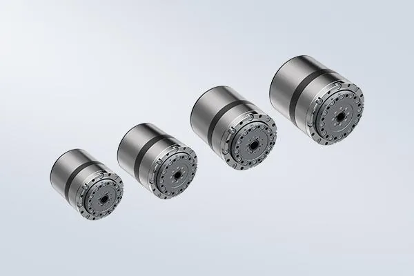

Sanhua: The Actuator Giant Behind Optimus
002050.SZ profile \u2014 \u00a5685M Tesla order, joints and thermal management.
A humanoid is, financially speaking, a collection of expensive joints wrapped in structure. Actuators take 40-56% of the bill of materials — and Chinese suppliers now own the muscle: Tuopu and Sanhua inside Tesla's Optimus, Leaderdrive and Zhongda Leader selling plug-and-play joint modules at half the imported price.

Strip a humanoid to its anatomy and you find one dominant cost: the actuators. Analysts at Morgan Stanley put actuators near 56% of a humanoid's bill of materials; other 2026 estimates range from 40% to 50%. A typical full-size robot carries about 30 actuators — 16 rotary and 14 linear — and every one is a precision module of motor, reducer, encoder, torque sensor and driver. For years this muscle belonged to Western and Japanese motion-control houses. Today the world's largest humanoid supply chain — more than 140 complete-machine companies and 330 product releases in China in 2025 — runs on Chinese actuators.
An actuator is not a single part; it is the joint itself. Rotary joints take torque from a frameless torque motor through a harmonic or planetary reducer; linear joints convert rotation into push-pull motion via planetary roller screws. High-power joints now exceed 530 N·m at the output. Because every joint needs its own actuator, the cost scales with the robot's degrees of freedom — which is why the industry's flagship cost-down strategy is the integrated joint module: motor, reducer, encoder, torque sensor and driver fused into one housing, replacing the three-part drivetrain and cutting both price and weight. Chinese makers pushed integrated module prices from multi-thousand-dollar precision instruments to sub-1,000-RMB standard components.
| Company | Tuopu Group (拓普) | Sanhua (三花) | Leaderdrive (绿的) | Zhongda Leader (中大力德) |
|---|---|---|---|---|
| Core | Linear + rotary actuator assemblies, skin, sensors | Actuator & thermal, joint modules | KGU integrated joint modules | eRob plug-and-play joints |
| Signal | In Optimus, AgiBot, Xiaomi; Mexico plant targets 300k sets (Q2 2026) | Reported $685M Optimus order (Oct 2025) | Harmonic leader; modules ~$900-1,250 | EtherCAT/CANopen; ~$700-1,050 modules |
| Edge | Auto Tier-1 scale, six robot product lines | HVAC/EV mechatronics + OEM network | Reducer heritage + integration | Value-priced complete joints |
Tuopu Group (601689) is the clearest winner of the humanoid actuator race. It supplies linear and rotary actuator assemblies to Tesla Optimus, AgiBot and Xiaomi — Tesla alone accounts for 35-40% of its revenue — and has expanded into dexterous-hand motors, structural body parts, sensors, foot dampers and electronic flexible skin. Its Mexico factory is already in production with a capacity target of 300,000 sets in Q2 2026. Daiwa named Tuopu a top buy among humanoid actuator names, citing mass-production nominations and scalable cost reduction.
Sanhua Intelligent Controls (002050), the HVAC and EV thermal-components giant, crossed into humanoid actuators so successfully that in October 2025 Tesla placed a reported $685M actuator order — sending Sanhua's stock to the daily limit and igniting the whole A-share robot chain. As one of the core joint-module suppliers for Optimus, Sanhua transfers its mechatronics and thermal-management scale from cars to robot joints, backed by Morgan Stanley's Humanoid 100 listing.
Leaderdrive (绿的谐波), China's harmonic-drive champion, now sells the KGU series integrated modules (around $900-1,250) that pair its reducers with motors and encoders. Zhongda Leader (中大力德) sells the eRob series plug-and-play joint modules (~$700-1,050) with EtherCAT/CANopen out of the box — the value-priced lane for startups that want a complete joint rather than a bare reducer. Add Inovance, Kinco and Leadshine in frameless motors, and the full actuator stack — motor, reducer, screw, bearing, driver — is now made in China end to end.
2026 humanoid actuator selection guides show the cost gap plainly: planetary/RV joints at RMB 4,000-8,000 domestic versus RMB 8,000-18,000 imported; linear actuators at RMB 3,500-7,000 domestic versus RMB 7,000-15,000 imported. At roughly half the price with comparable specs, Chinese actuators reset the economics of humanoids — the single biggest reason the cost curve of the whole robot is falling. That is also why Western coverage increasingly frames the actuator as China's structural moat: precision mechanical engineering, not AI, is the expensive part.
A typical full-size humanoid carries about 30 actuators — roughly 16 rotary and 14 linear — with joint torque reaching above 530 N·m in high-power joints.
Chinese suppliers lead: Tuopu Group supplies linear and rotary actuator assemblies, and Sanhua Intelligent Controls received a reported $685M actuator order from Tesla in October 2025.
2026 selection guides put Chinese planetary/RV joints at RMB 4,000-8,000 versus RMB 8,000-18,000 imported, and linear actuators at RMB 3,500-7,000 versus RMB 7,000-15,000 imported — roughly half the price.
An integrated joint module combines a frameless torque motor, precision reducer, encoder, torque sensor and driver in one housing — replacing the separate three-part drivetrain and cutting cost and weight.
002050.SZ profile \u2014 \u00a5685M Tesla order, joints and thermal management.
The ring motors powering every rotating joint — Inovance, Kinco, Leadshine.
Leaderdrive and the reducers inside rotary actuators.
The linear-joint workhorse — the priciest component per unit.
~72 precision bearings per humanoid, now domestic at scale.
Heavy-duty joints and the 3.2B RMB Unitree contract.
Where actuator miniaturization meets manipulation.
Company profiles, product pages and supplier analysis for China's robotics ecosystem.